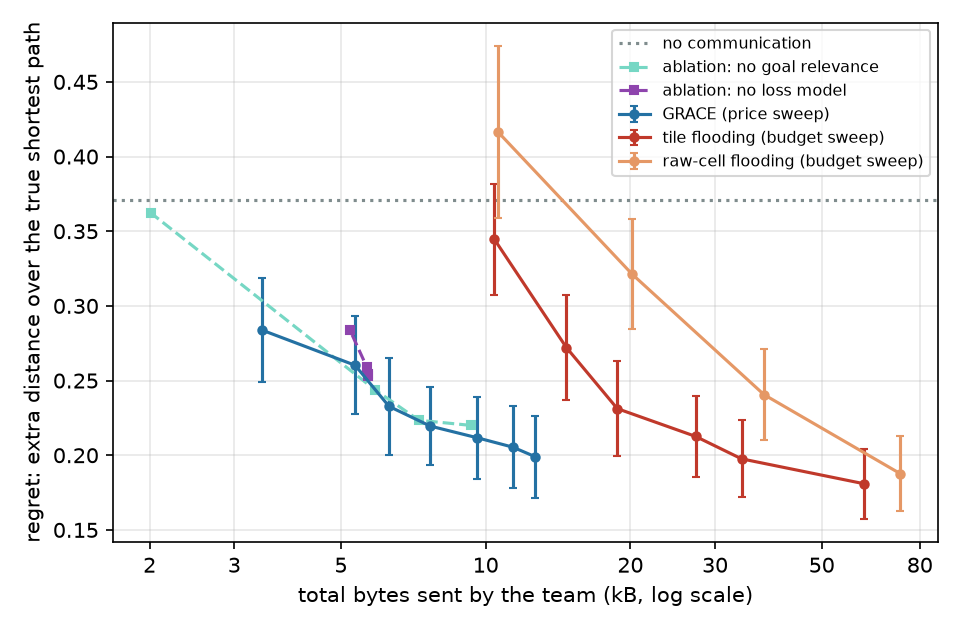
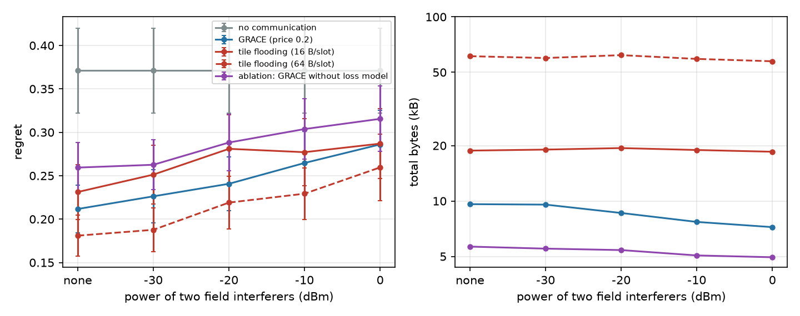
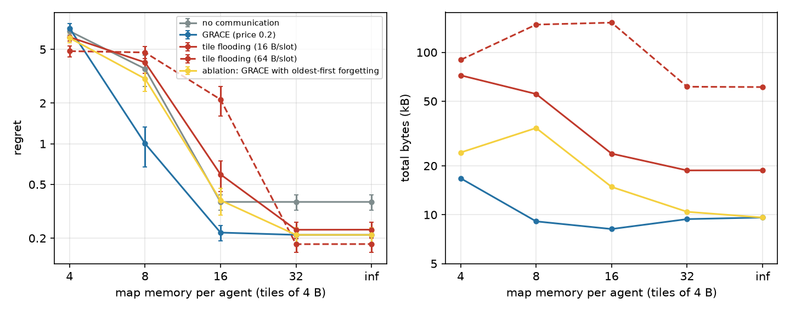
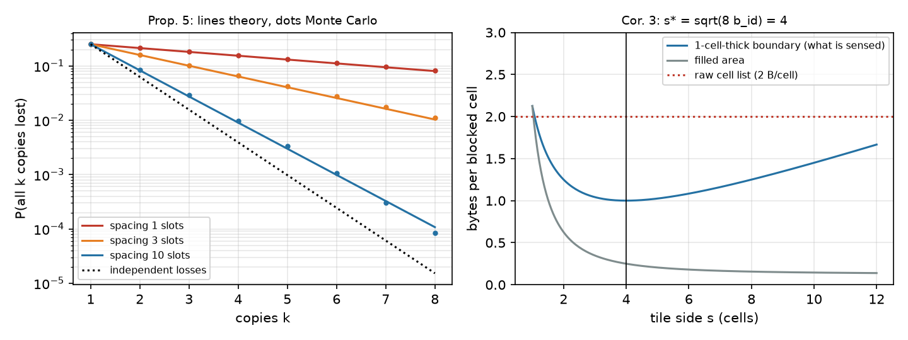

Ropera Labs · swarm-dil v0.3
GRACE: telling teammates only what changes their decision
A team of agents crosses unknown terrain from A to B. Each sees through a short vision cone, remembers a few hundred bytes, and talks over short, fading radio links. GRACE (Goal-Relevant Adaptive Compressed Exchange) decides what to send, in how many bytes and how many times, from the receivers' navigation decisions. Full derivations: technical report (PDF) · code: github.com/RoperaLabs/swarm-dil.
1 · Only obstacles matter, and only some of them
Agents plan optimistically: unknown cells are assumed free. Then learning that a cell is free never changes a decision (Lemma 1), so free space is never stored or sent. And a report about an obstacle that lies on a teammate's plan at path distance $s$ saves at most
$$0 \le W \le 2\,(s-r)^+ ,$$where $r$ is the teammate's sensor range (Proposition 1): an obstacle just ahead is worthless (the teammate is about to see it), while the bottom of a pocket far ahead is worth up to twice its distance. Cells outside the octile ellipse $h(x,y)+h(y,B)\le d_K(x)$ cannot be on the current plan (Lemma 3), so they are the first to be forgotten.
Try it. Click cells to add or remove obstacles. Shift-click (or the toggle) to move the receiver x. The sender knows every obstacle; the receiver knows none.
plan rounds of the closure
tile value (darker = more)ellipse
Value of each 4×4 tile for the receiver:
2 · How many copies, and when
Without acknowledgements, a sender keeps a belief that each teammate does not yet know a tile, and lowers it with each copy. Links fade in bursts, modelled as a Gilbert–Elliott chain with loss $\pi_B$ and memory $\lambda=1-p-q$. The probability that $k$ copies spaced $\tau$ slots apart are all lost is (Proposition 5)
$$\Pr[\text{all lost}]=\pi_B\,\big(\pi_B+\pi_G\lambda^{\tau}\big)^{k-1}.$$With bursty links, back-to-back repeats are almost useless. The number of copies worth sending grows only with the logarithm of the value (Proposition 6).
λ = · copies worth sending k* =
P(all k* lost) = (independent losses would give )
spacing for near-independence (ε = 0.1): τ ≥ slots
3 · What goes in each byte
A vision cone with line of sight only reveals obstacle surfaces, sets one cell thick. Sending them as $s\times s$ tiles (2-byte id plus $s^2$-bit mask) costs $(2+s^2/8)/s$ bytes per cell, minimised at $s^\star=\sqrt{8\cdot 2}=4$: one byte per cell, half the cost of listing cells (Corollary 3). Tiles merge by bitwise OR, a semilattice, so duplicates, reordering and relaying never corrupt knowledge.
4 · A recorded mission
obstacles (ground truth)agents and vision conespackets delivered this secondtiles remembered by agent 0
5 · Results
Each agent runs GRACE internally and receives only its own cone readings, the outcome of its moves, and raw bytes from teammates. Figures from the simulation study, with 20 random terrains per point:




Open research for dual-use applications such as search and rescue. Synthetic data only.